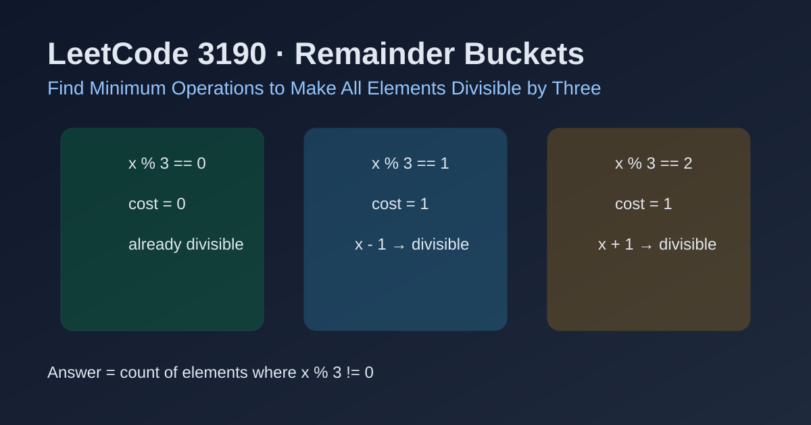

LeetCode 3190: Find Minimum Operations to Make All Elements Divisible by Three (Remainder Buckets)
LeetCode 3190ArrayMathModuloToday we solve LeetCode 3190 - Find Minimum Operations to Make All Elements Divisible by Three.
Source: https://leetcode.com/problems/find-minimum-operations-to-make-all-elements-divisible-by-three/

English
Problem Summary
Given an integer array nums, one operation lets you increase or decrease one element by 1. Return the minimum number of operations to make every element divisible by 3.
Key Insight
Only each number's remainder modulo 3 matters:
- remainder 0: already divisible, cost 0
- remainder 1: one -1 (or two +1) makes it divisible; minimum is 1
- remainder 2: one +1 (or two -1) makes it divisible; minimum is 1
So each non-divisible element contributes exactly one operation.
Brute Force and Limitations
A brute-force simulation per number trying many increments/decrements is unnecessary. Modulo immediately tells the minimum adjustment distance.
Optimal Algorithm Steps
1) Initialize answer ans = 0.
2) Traverse every x in nums.
3) If x % 3 != 0, increment ans.
4) Return ans.
Complexity Analysis
Time: O(n).
Space: O(1).
Common Pitfalls
- Overcomplicating with dynamic programming or sorting.
- Forgetting that both remainder 1 and 2 need exactly one operation (minimum).
- Mixing up divisibility by 2 and divisibility by 3 checks.
Reference Implementations (Java / Go / C++ / Python / JavaScript)
class Solution {
public int minimumOperations(int[] nums) {
int ans = 0;
for (int x : nums) {
if (x % 3 != 0) ans++;
}
return ans;
}
}func minimumOperations(nums []int) int {
ans := 0
for _, x := range nums {
if x%3 != 0 {
ans++
}
}
return ans
}class Solution {
public:
int minimumOperations(vector<int>& nums) {
int ans = 0;
for (int x : nums) {
if (x % 3 != 0) ++ans;
}
return ans;
}
};class Solution:
def minimumOperations(self, nums: List[int]) -> int:
ans = 0
for x in nums:
if x % 3 != 0:
ans += 1
return ansvar minimumOperations = function(nums) {
let ans = 0;
for (const x of nums) {
if (x % 3 !== 0) ans++;
}
return ans;
};中文
题目概述
给定整数数组 nums。一次操作可以把某个元素加一或减一。要求把所有元素都变成 3 的倍数，返回最少操作次数。
核心思路
对 3 取模即可分类：
- 余数 0：已经是 3 的倍数，代价 0
- 余数 1：减 1（或加 2）即可，最少 1 次
- 余数 2：加 1（或减 2）即可，最少 1 次
因此所有“不能被 3 整除”的元素都只需要 1 次操作，答案就是这类元素的个数。
暴力解法与不足
若对每个数暴力尝试多次加减，属于重复计算。因为模 3 余数已经直接给出最短距离，没必要模拟。
最优算法步骤
1）初始化 ans = 0。
2）遍历数组每个元素 x。
3）若 x % 3 != 0，则 ans++。
4）返回 ans。
复杂度分析
时间复杂度：O(n)。
空间复杂度：O(1)。
常见陷阱
- 把简单计数问题做成复杂 DP。
- 忘记余数 1 与余数 2 的最小代价都为 1。
- 把判断条件写成“能否被 2 整除”。
多语言参考实现（Java / Go / C++ / Python / JavaScript）
class Solution {
public int minimumOperations(int[] nums) {
int ans = 0;
for (int x : nums) {
if (x % 3 != 0) ans++;
}
return ans;
}
}func minimumOperations(nums []int) int {
ans := 0
for _, x := range nums {
if x%3 != 0 {
ans++
}
}
return ans
}class Solution {
public:
int minimumOperations(vector<int>& nums) {
int ans = 0;
for (int x : nums) {
if (x % 3 != 0) ++ans;
}
return ans;
}
};class Solution:
def minimumOperations(self, nums: List[int]) -> int:
ans = 0
for x in nums:
if x % 3 != 0:
ans += 1
return ansvar minimumOperations = function(nums) {
let ans = 0;
for (const x of nums) {
if (x % 3 !== 0) ans++;
}
return ans;
};
Comments